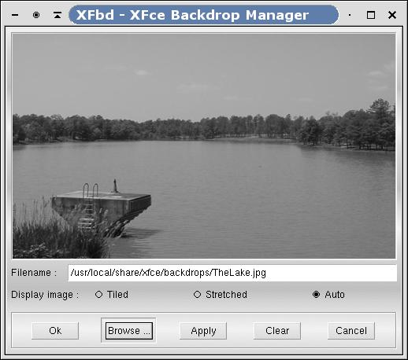

Utilities
XFce comes with several utilities that can make your life easier. This section will present all of them and show screenshots where applicable.
XFbd

Figure 6-1. XFbd
XFbd is a backdrop manager that displays image files on the root window, as a wallpaper. It can be activated in the setup dialog under the startup tabfolder.
 | Caution |
|---|---|
Please note that xfbd cannot be used in combination with the option "Repaint root window of workspace" in XFce setup screen and vice versa (both use the same root window...). |